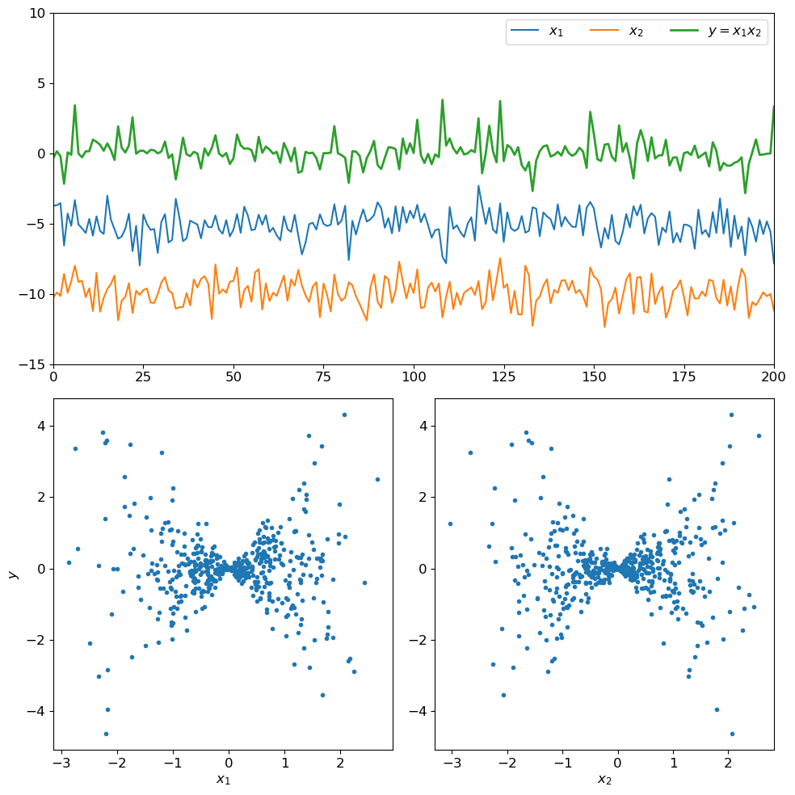
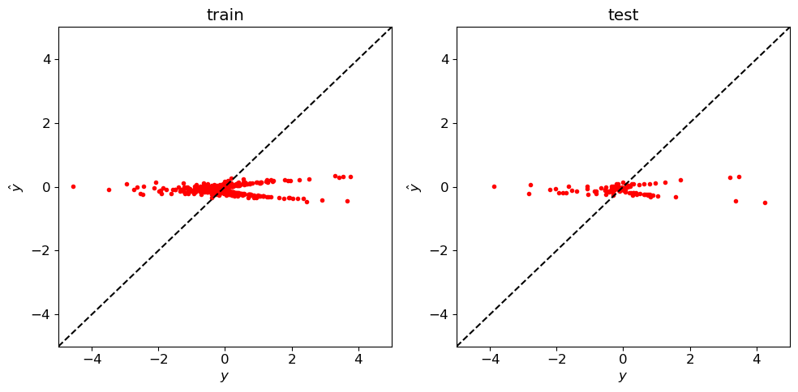
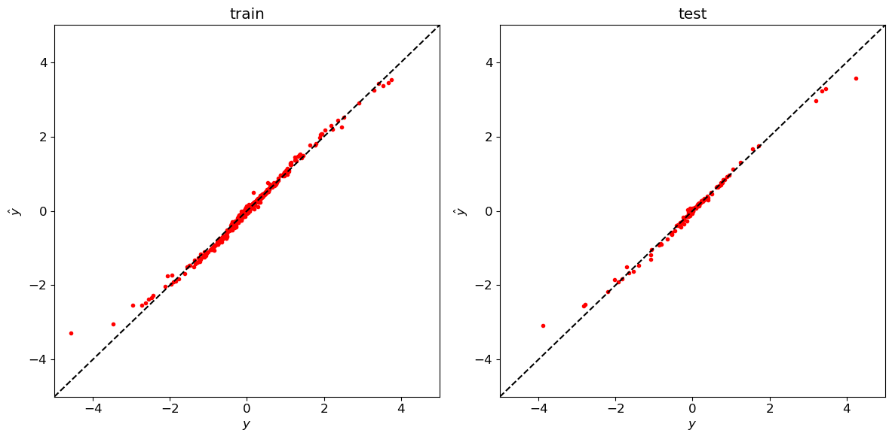
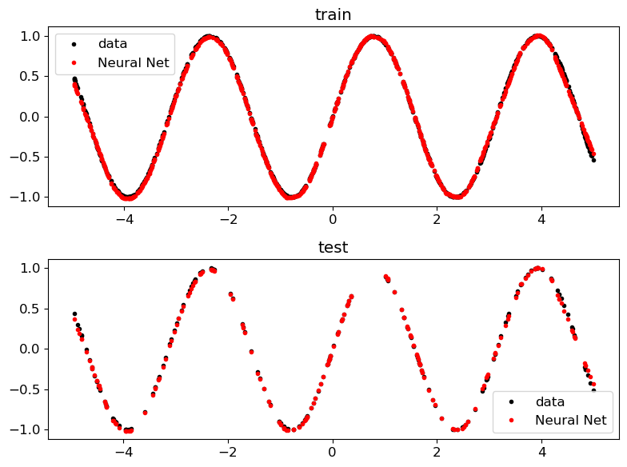

Neural Nets for Regresssion - Multi Layer Perceptron#
import numpy as np
import pandas as pd
from scipy import stats
import pandas as pd
import matplotlib.pyplot as plt
plt.rcParams.update({'font.size': 12})
def norm(x):
return (x-np.mean(x))/np.std(x)
n_samples=500
t=np.arange(n_samples)
x1=stats.norm.rvs(loc=0,scale=1,size=n_samples)
x2=stats.norm.rvs(loc=0,scale=1,size=n_samples)
x3=stats.norm.rvs(loc=0,scale=1,size=n_samples)
y=x1*x2
fig=plt.figure(figsize=[10,10])
ax=plt.subplot(2,1,1)
ax.plot(t,norm(x1)-5,label='$x_1$')
ax.plot(t,norm(x2)-10,label='$x_2$')
ax.plot(t,norm(y),linewidth=2,label='$y=x_1x_2$')
ax.legend(ncol=4)
ax.set_xlim(0,200)
ax.set_ylim(-15,10)
ax=plt.subplot(2,2,3)
ax.plot(x1,norm(y),'.')
ax.set_xlabel('$x_1$')
ax.set_ylabel('$y$')
ax=plt.subplot(2,2,4)
ax.plot(x2,norm(y),'.')
ax.set_xlabel('$x_2$')
plt.tight_layout()

Let’s do some Machine Learning#
from sklearn.model_selection import train_test_split
from sklearn.linear_model import LinearRegression
from sklearn.neural_network import MLPRegressor
Organize the data#
# organize the data
Xn=np.stack([norm(x1),norm(x2)],axis=1);
yn=x1*x2;
X_train, X_test, y_train, y_test = train_test_split(Xn, yn,test_size=0.2,random_state=1)
print(Xn.shape)
print(yn.shape)
print(X_train.shape)
print(y_train.shape)
print(X_test.shape)
print(y_test.shape)
(500, 2)
(500,)
(400, 2)
(400,)
(100, 2)
(100,)
Linear Regression#
# linear Regression
linreg_obj=LinearRegression()
linreg_model=linreg_obj.fit(Xn,yn)
yhat_train=lin_reg.predict(X_train);
yhat_test=lin_reg.predict(X_test);
fig=plt.figure(figsize=[10,5])
plt.subplot(1,2,1)
plt.plot(y_train,yhat_train,'r.')
plt.plot([-5,5],[-5,5],'k--')
plt.xlim(-5,5)
plt.ylim(-5,5)
plt.xlabel(r'$y$')
plt.ylabel(r'$\hat y$')
plt.title('train')
plt.subplot(1,2,2)
plt.plot(y_test,yhat_test,'r.')
plt.plot([-5,5],[-5,5],'k--')
plt.tight_layout()
plt.xlim(-5,5)
plt.ylim(-5,5)
plt.xlabel(r'$y$')
plt.ylabel(r'$\hat y$')
plt.title('test')
plt.tight_layout()

Feed-forward neural net (Multi-layer Perceptron)#
from sklearn.neural_network import MLPRegressor
# Define hyperparameters & architecture
mlp_obj = MLPRegressor(hidden_layer_sizes=[16,16],max_iter=5000)
# Fit model (estimate parameters)
mlp_model=mlp_obj.fit(Xn,yn)
# Predict
yhat_train=mlp_model.predict(X_train);
yhat_test=mlp_model.predict(X_test);
fig=plt.figure(figsize=[12,6])
plt.subplot(1,2,1)
plt.plot(y_train,yhat_train,'r.')
plt.plot([-5,5],[-5,5],'k--')
plt.xlim(-5,5)
plt.ylim(-5,5)
plt.xlabel(r'$y$')
plt.ylabel(r'$\hat y$')
plt.title('train')
plt.subplot(1,2,2)
plt.plot(y_test,yhat_test,'r.')
plt.plot([-5,5],[-5,5],'k--')
plt.tight_layout()
plt.xlim(-5,5)
plt.ylim(-5,5)
plt.xlabel(r'$y$')
plt.ylabel(r'$\hat y$')
plt.title('test')
plt.tight_layout()

Sine Wave#
def norm(x):
return (x-np.mean(x))/np.std(x)
n_samples=1000
x=stats.uniform.rvs(loc=-5,scale=10,size=n_samples)
y=np.sin(x*2)
X=x.reshape(-1,1)
plt.plot(X,y,'.')
[<matplotlib.lines.Line2D at 0x15de45f70>]
X_train, X_test, y_train, y_test = train_test_split(X, y,test_size=0.2,random_state=1)
from sklearn.neural_network import MLPRegressor
model = MLPRegressor(hidden_layer_sizes=[64,64,64],max_iter=5000)
mlp =model.fit(X_train,y_train)
yhat_train =model.predict(X_train)
yhat_test =model.predict(X_test)
plt.figure(figsize=[8,6])
plt.subplot(2,1,1)
plt.plot(X_train,y_train,'k.',label='data')
plt.plot(X_train,yhat_train,'r.',label='Neural Net')
plt.title('train')
plt.legend()
plt.subplot(2,1,2)
plt.plot(X_test,y_test,'k.',label='data')
plt.plot(X_test,yhat_test,'r.',label='Neural Net')
plt.title('test')
plt.legend()
plt.tight_layout()

x=np.linspace(-7,7,1000).reshape(-1,1)
yhat=mlp.predict(x)
fig,ax=plt.subplots(1,figsize=[12,6])
plt.plot(X_train,y_train,'ko',label='training data')
plt.plot(x,yhat,'r-',linewidth=3,label='Neural Net')
plt.xlabel('X')
plt.ylabel('Y')
plt.legend()
<matplotlib.legend.Legend at 0x168a24350>